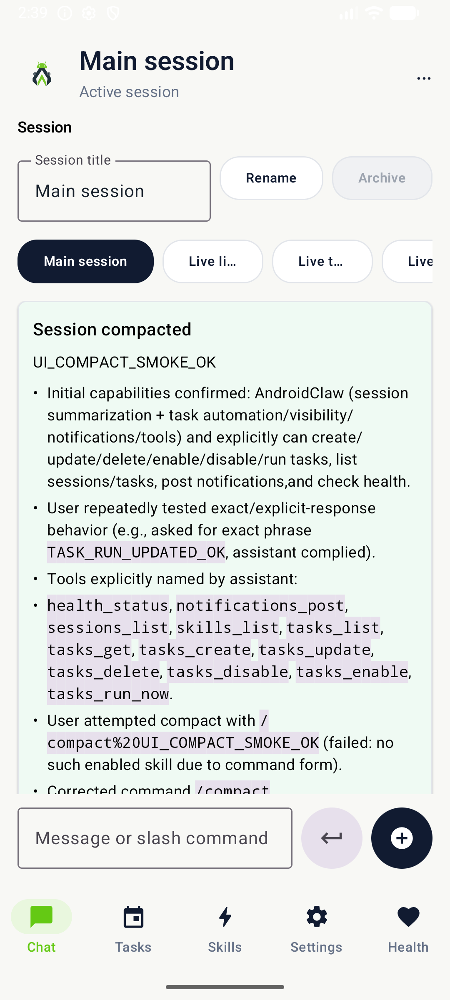
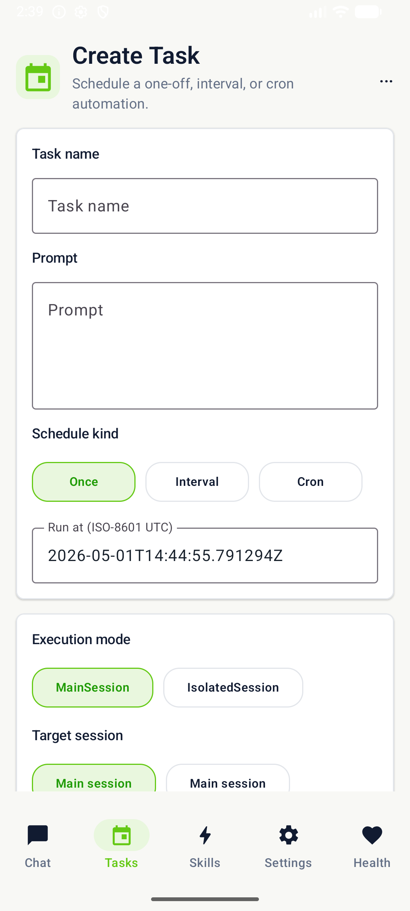
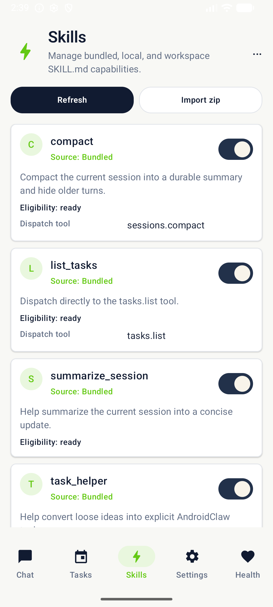
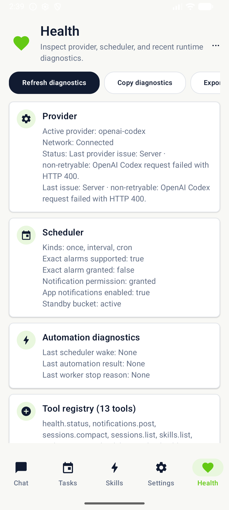

Persistent assistant history
Main and normal sessions keep durable Room-backed messages, streamed output, retry/cancel paths, summaries, search, export, and prompt budgeting.
A lightweight Android-native assistant host for durable chat
sessions, typed tools, SKILL.md skills, provider
streaming, and scheduled automations.
AndroidClaw keeps the phone as the v0 host. It avoids desktop runtimes, browser automation, and remote-first companion modes in favor of a small Kotlin app that can be built, inspected, and installed directly.
The runtime promises that hold the app together — every shipped feature lives under one of these.
Main and normal sessions keep durable Room-backed messages, streamed output, retry/cancel paths, summaries, search, export, and prompt budgeting.
Tool calls and tool results are persisted as transcript records, with clear descriptors and deterministic built-in task/session utilities.
SKILL.md workflowsBundled, local, and workspace skills support frontmatter parsing, precedence, enable/disable state, config, secrets, eligibility, and slash command dispatch.
Once, interval, and cron tasks run through WorkManager with exact-alarm-aware routing, task history, diagnostics, and main or isolated session execution modes.
The current AndroidClaw beta is already a usable local-first runtime — configure providers, stream responses, preserve conversations, run typed tools, import skills, schedule automations, and produce installable QA / release artifacts.
The four working surfaces a user touches every day.

Streamed provider turns, summaries, export, compact, and an expandable composer with a typed actions row. Tool calls and results are part of the transcript, not a side panel.
STREAMING · CANCEL · RETRY · SUMMARIZE

Create once, interval, and cron tasks. Inspect recent runs, follow exact-alarm guidance, and route scheduled work through main or isolated sessions.
ONCE · INTERVAL · CRON · DIAGNOSTICS

SKILL.md inventoryBundled, local, and workspace workflows side by side, with source, eligibility state, slash-command dispatch, and clear precedence between layers.
BUNDLED · LOCAL · WORKSPACE · SLASH

Provider and network state, scheduler diagnostics, crash markers, and exportable reports — everything you need to triage without leaving the phone.
PROVIDERS · SCHEDULER · NETWORK · EXPORT
Where to look next.